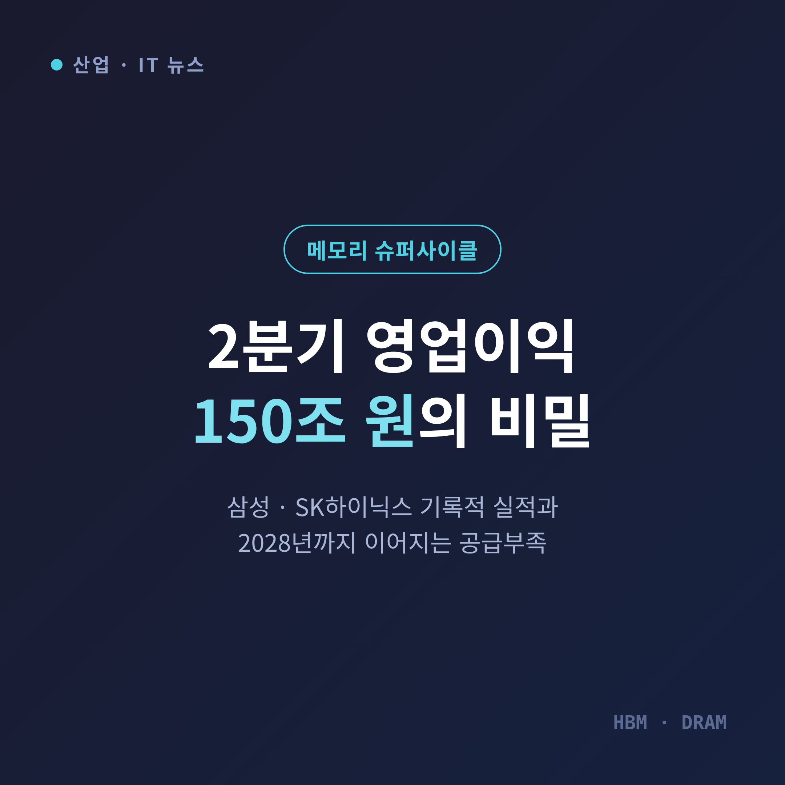
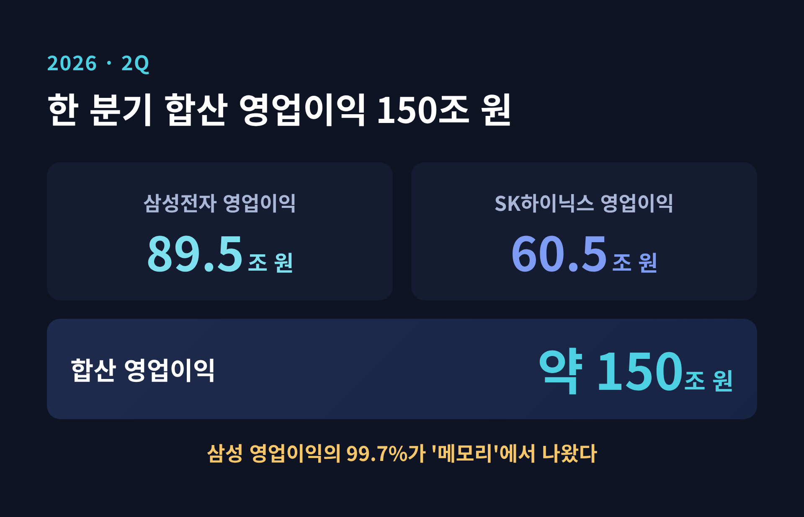
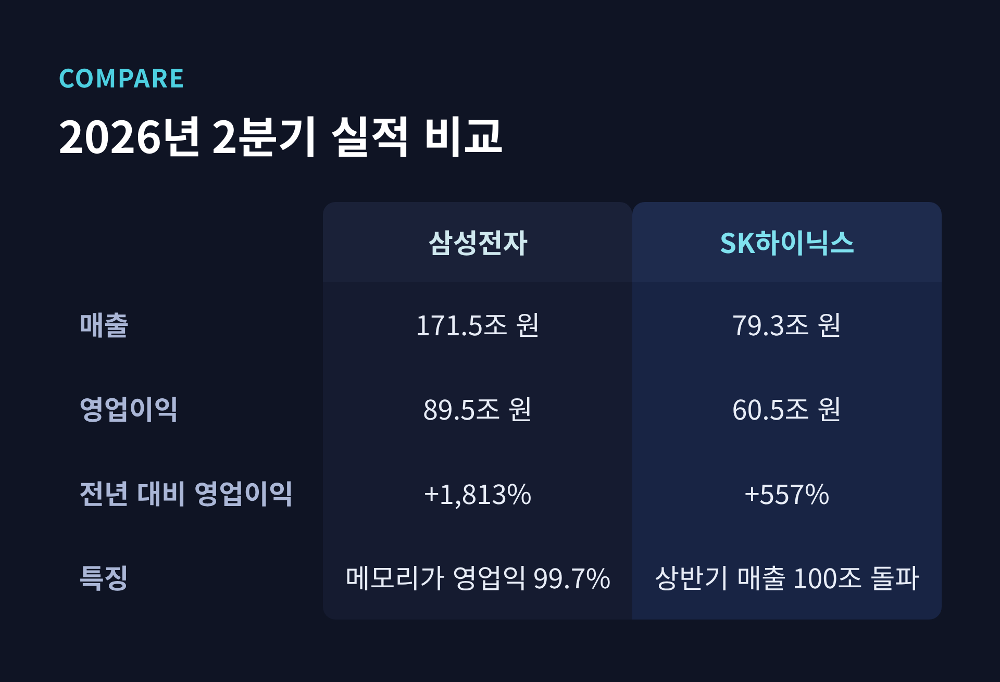
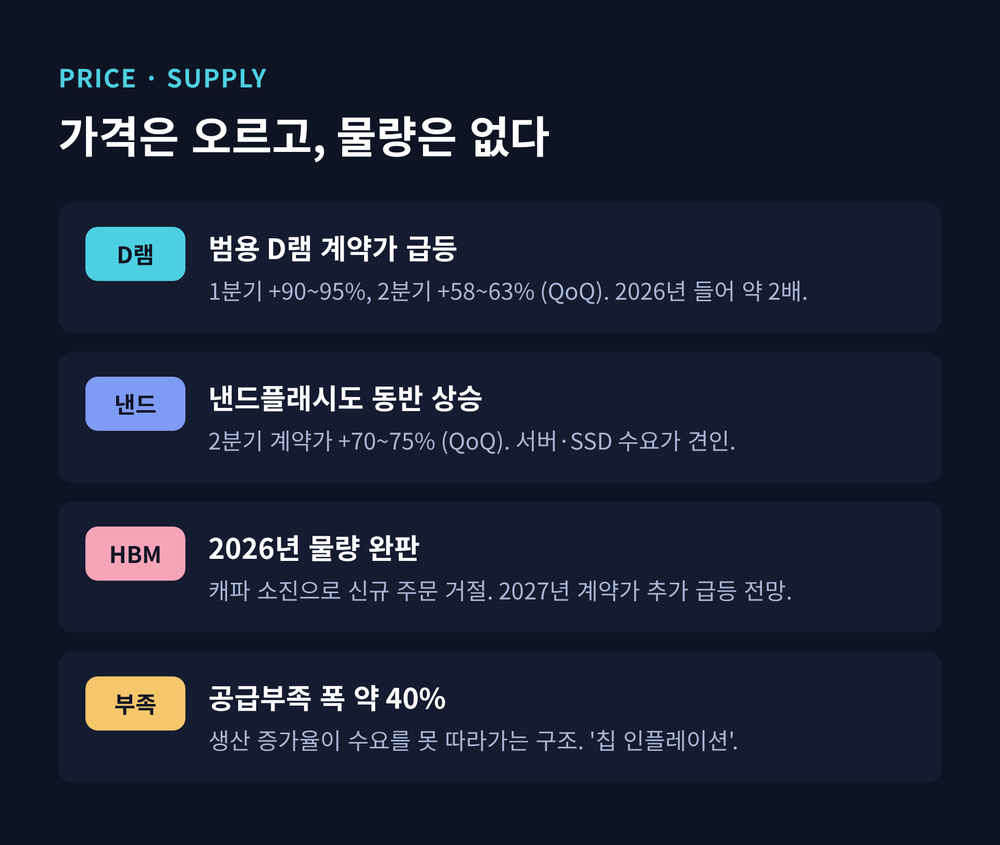
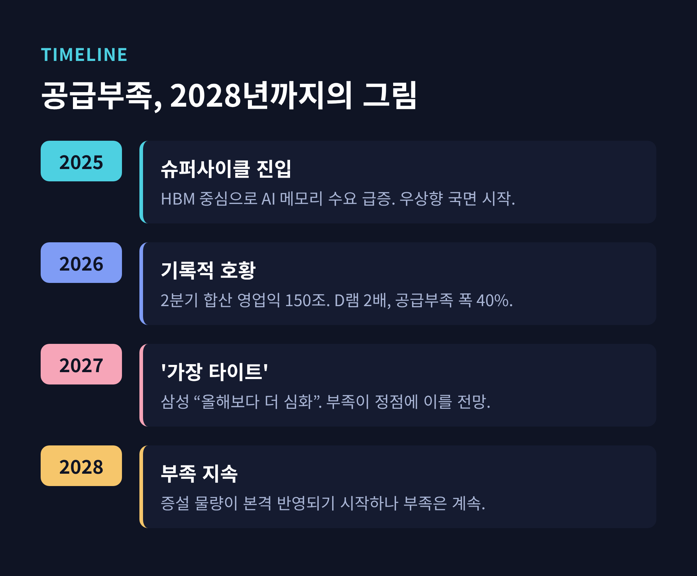
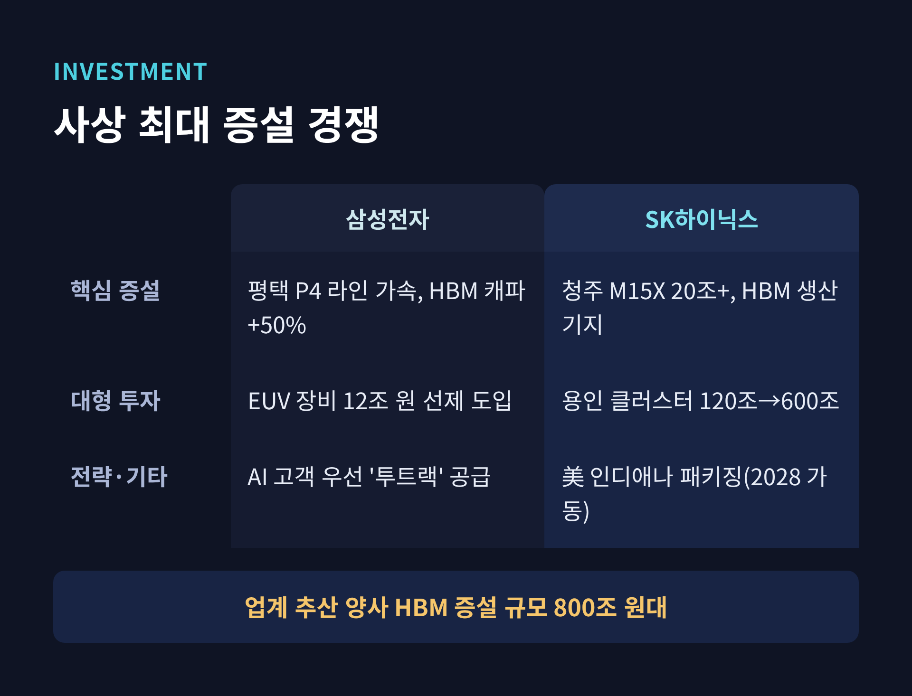
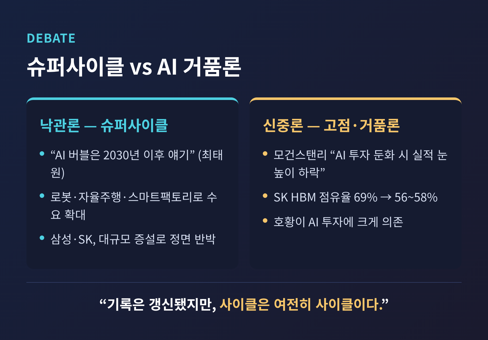

삼성·SK하이닉스 2분기 영업이익 150조, 메모리 공급부족 2028년까지 가는 이유

이번 글에서는 삼성전자와 SK하이닉스가 2026년 2분기에 합산 영업이익 약 150조 원을 낸 배경과, 메모리 공급부족이 2028년까지 이어질 것이라는 전망을 정리해 보겠습니다.
한 분기 합산 영업이익 150조 원. 숫자만 보면 실감이 잘 나지 않습니다. 무슨 일이 벌어졌고, 왜 중요한지부터 차분히 짚겠습니다.
이 글은 정보 전달을 위한 해설이며, 특정 종목의 매수·매도를 권하는 투자 권유가 아닙니다.
무슨 일이 있었나 — 한 분기에 150조 원
2026년 2분기 성적표는 두 회사 모두 사상 최대였습니다.
삼성전자는 매출 171.5조 원, 영업이익 89.5조 원을 기록했습니다. 전년 같은 기간과 비교하면 영업이익이 무려 1,813% 늘었습니다.
SK하이닉스는 매출 79.3조 원, 영업이익 60.5조 원을 냈습니다. 영업이익률이 76%에 이릅니다. 100원을 팔아 76원을 남겼다는 뜻입니다. 상반기 누적 매출은 처음으로 100조 원을 넘어섰습니다.
두 회사를 더하면 한 분기 영업이익이 약 150조 원입니다. 반년 만에 지난 한 해 실적을 갈아치운 셈입니다.

눈여겨볼 대목이 하나 더 있습니다. 삼성전자 영업이익의 99.7%가 메모리 사업부에서 나왔습니다. 반대로 스마트폰·가전을 담당하는 DX 부문은 사상 처음 분기 적자를 기록했습니다.
예전엔 스마트폰이 삼성의 얼굴이었습니다. 지금은 메모리 홀로 회사를 떠받치는 구조입니다. 이 대비가 지금 반도체 시장의 온도를 그대로 보여줍니다.

왜 이렇게 벌었나 — AI가 끌어올린 가격
실적의 원천은 결국 가격입니다.
인공지능 데이터센터가 메모리를 빨아들이면서, 범용 D램과 낸드플래시, 고대역폭 메모리(HBM)의 가격이 한꺼번에 올랐습니다.
시장조사업체 집계를 보면, 범용 D램 계약가격은 1분기에 직전 분기 대비 90~95%, 2분기에도 58~63% 뛰었습니다. 낸드플래시 역시 두 자릿수 상승을 이어갔습니다. 2026년 들어 D램 가격은 대략 두 배가 됐습니다.
HBM은 사정이 더 극적입니다. 2026년 생산 물량이 이미 완판돼, 제조사가 신규 주문을 받지 못하는 상황입니다. 연간 단가로 계약하는 구조라 오른 가격이 뒤늦게 반영되는데, 그래서 HBM 계약가는 2027년에 다시 몇 배로 뛸 것이라는 전망까지 나옵니다.
모건스탠리는 이 국면을 "칩 인플레이션(chip inflation)"이라고 불렀습니다. 반도체가 물가처럼 오르는 시대라는 표현입니다.

여기서 잠깐 용어를 풀어두겠습니다. HBM은 여러 개의 D램을 수직으로 쌓아 데이터 통로를 넓힌 메모리입니다. AI 가속기가 대량의 데이터를 빠르게 주고받을 때 쓰입니다. AI 시대의 '병목'을 뚫는 부품인 셈입니다.
진짜 쟁점 — 공급부족은 왜 2028년까지 가나
이번 사이클의 핵심은 단순한 호황이 아닙니다. "부족이 오래 간다"는 데 있습니다.
삼성전자 메모리전략마케팅실장은 실적 발표 자리에서 이렇게 말했습니다. "2027년에는 공급부족이 올해보다 더 심화하고, 2028년에도 지속될 것입니다."
올해가 정점이 아니라, 내년이 더 심하다는 이야기입니다.
이유는 세 가지 병목입니다. HBM 생산, 첨단 패키징, 미세 공정. 세 곳이 동시에 막혀 있어 공급을 빠르게 늘리기 어렵습니다. 현재 공급부족 폭은 약 40%로 추산됩니다. 만들어도 수요를 못 따라간다는 뜻입니다.
시장조사기관 옴디아는 공급 완화가 2027년 이후에나 가능하다고 봤습니다. 반도체 장비·재료 협회 SEMI는 D램, 그중에서도 HBM이 본격적인 '슈퍼사이클'에 들어섰다고 진단했습니다. 통상적인 하락 국면 없이 우상향이 길게 이어지는 흐름을 가리킵니다.

배경에는 빅테크의 지갑이 있습니다. 마이크로소프트, 메타 등 대형 클라우드 기업의 2026년 설비 투자(CapEx)는 7,250억 달러, 우리 돈으로 약 1,071조 원을 넘어설 전망입니다. 이 돈이 데이터센터로, 다시 메모리 주문으로 흘러듭니다.
이해관계 — 공급을 늘려도 못 따라가는 증설 경쟁
두 회사는 손 놓고 호황을 즐기지 않습니다. 오히려 사상 최대 규모로 공장을 짓고 있습니다.
SK하이닉스는 올해 설비 투자를 30조 원대 중반으로 늘렸습니다. 청주 M15X 공장에 20조 원 넘게 투입해 HBM 생산기지로 삼고, 용인 반도체 클러스터 투자 계획은 기존 120조 원에서 600조 원으로 다섯 배 키웠습니다.
삼성전자는 평택 P4 라인을 앞당겨 HBM 생산능력을 올해 50% 늘리기로 했습니다. 병목을 예상해 EUV 노광장비 12조 원어치를 미리 사들였습니다. 차세대 제품인 HBM4 공급도 늘려, 3분기 HBM4 매출이 전분기보다 3배 이상 뛸 것으로 내다봤습니다.
업계에서는 두 회사의 HBM 관련 증설 규모를 합쳐 800조 원대로 봅니다. 관련 장비 회사들은 2028년까지 일감이 보인다고 말합니다.

그런데도 "공급을 늘려도 부족하다"는 말이 나옵니다. 반도체 공장은 착공부터 양산까지 몇 년이 걸리기 때문입니다. 지금 짓는 공장이 물량을 쏟아낼 즈음이면, 수요는 또 저만치 앞서가 있을 가능성이 큽니다.
반론도 있습니다 — AI 거품론과 고점 논란
물론 장밋빛 전망만 있는 것은 아닙니다.
한쪽에서는 "고점론"이 고개를 듭니다. 모건스탠리는 반도체 산업이 하이퍼스케일러의 AI 투자에 크게 기대고 있어, 투자 속도가 둔해지면 메모리 기업의 실적 눈높이도 함께 낮아질 수 있다고 경고했습니다. AI 투자가 과열이라는 이른바 'AI 거품론'과 맞닿아 있습니다.
경쟁 구도의 변화도 변수입니다. SK하이닉스의 HBM 시장 점유율은 1년 전 약 69%에서 최근 56~58% 수준으로 낮아진 것으로 관측됩니다. 삼성전자와 마이크론의 추격이 거세졌기 때문입니다.
반대편의 목소리도 분명합니다. SK그룹 최태원 회장은 "AI 버블을 논하는 건 2030년 이후에나 가능한 이야기"라며 우려를 일축했습니다. AI가 데이터센터를 넘어 로봇, 자율주행차, 스마트팩토리로 번지면 메모리 수요는 더 늘 것이라는 판단입니다.
어느 쪽이 맞다고 지금 단정하기는 어렵습니다. 다만 두 회사가 고점론을 '증설'이라는 행동으로 반박하고 있다는 사실만은 분명합니다.

앞으로 어떻게 볼까
정리하면 이렇습니다.
2분기 150조 원은 AI가 만든 수요, 오른 가격, 그리고 좁은 공급이 겹친 결과입니다. 회사들은 내년이 올해보다 더 타이트할 것이라 말하고, 시장조사기관들은 부족이 2028년까지 이어진다고 봅니다.
동시에 이 호황이 얼마나 오래 갈지에 대한 물음표도 함께 커지고 있습니다. AI 투자가 계속 늘어야 이 그림이 유지되기 때문입니다.
숫자에 취하기보다, 수요와 공급이라는 두 축을 함께 지켜보는 편이 좋겠습니다.
끝으로 한 마디만 더 드리겠습니다.
"기록은 갱신됐지만, 사이클은 여전히 사이클입니다."
호황의 크기만큼 그 끝을 묻는 질문도 커지는 법입니다. 이번 슈퍼사이클이 정말 다를지는, 결국 2027년과 2028년의 공급이 답할 것입니다.